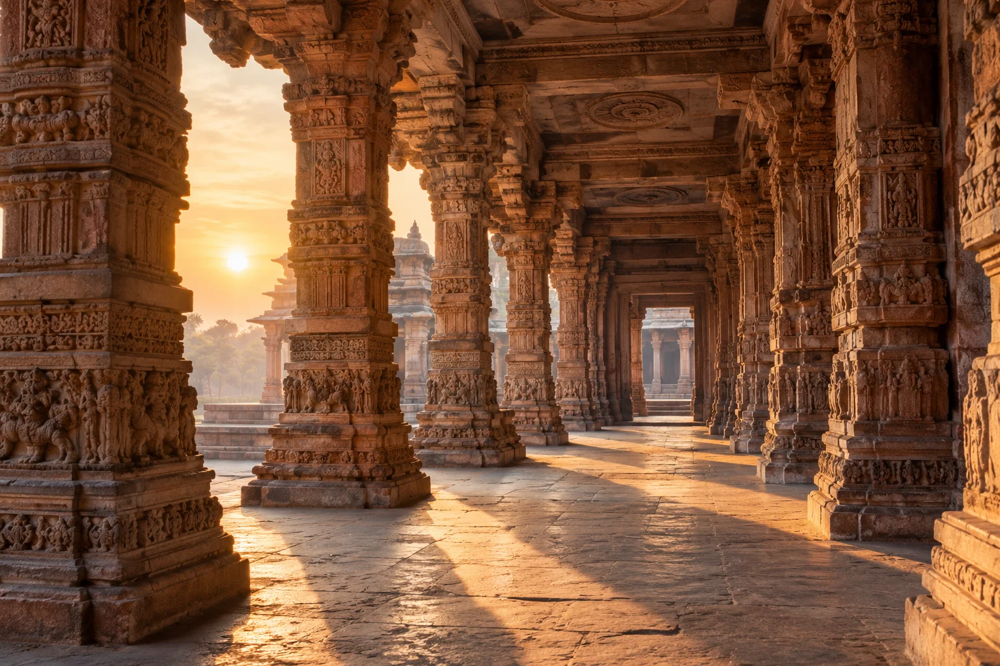

Dharma
Ethical living, responsibility and the principles that sustain life.
A LIVING HERITAGE. AN OPEN INVITATION.
Enter the world of Sanatan Dharma through its ideas, traditions and the stories that carry them across generations.
Stories, wisdom and traditions
of Sanatan Dharma

Understand the ideas. Discover the traditions. Follow the stories.
01 / THE FOUNDATIONS
A diverse family of spiritual traditions, united by enduring questions about life, the self and the Divine.
Sanatana Dharma is a name used for Hinduism, often translated as “eternal dharma.” Its traditions encompass philosophy, devotion, ritual and ways of living. They share a rich inheritance while offering different interpretations of spiritual truth.
Begin with four ideas that appear throughout its teachings. Their meanings deepen as we encounter different texts and schools.
Read the full introductionEthical living, responsibility and the principles that sustain life.
Action and its consequences, shaping the journey of life.
The cycle of birth, death and rebirth in Hindu thought.
Liberation from that cycle, understood differently across schools.
02 / THE DIVINE
Divine traditions are an entrance into a much larger world of stories and thought. These are a few starting points, rather than a complete list.
Explore gods and goddessesExplore Shaiva traditions
Explore Vaishnava traditions
Explore Shakta traditions
There is no single count that captures every Hindu tradition. Texts and communities describe the Divine in different ways, and many traditions connect multiple divine forms with one ultimate reality.
In the Brihadaranyaka Upanishad (3.9.1–9), a dialogue moves through several numbers—including thirty-three—and ultimately speaks of one. It invites reflection on the relationship between multiplicity and unity, rather than providing a universal catalogue.
Read the text and commentary03 / SACRED LITERATURE
Hymns, philosophical dialogues, epic narratives and sacred stories. Each offers a different way into the tradition.
Rig, Yajur, Sama and Atharva: four collections at the foundation of Hindu sacred literature.
Philosophical explorations of the self, ultimate reality and liberation.
The Ramayana and Mahabharata; the Bhagavad Gita is part of the Mahabharata.
Collections of narratives about deities, cosmic worlds, lineages and sacred places.
04 / THE STORY COLLECTION
Discover devotion, courage, wisdom and the search for meaning through the stories of Sanatan Dharma.
Discover illustrated previews from the Ramayana and Puranas. Explore by divine figure, scripture or theme.
Explore the storiesREAD WITH CONTEXT
This introduction is a starting point. Hindu traditions differ, and no brief overview can represent every school or community. Future stories will identify their sources and distinguish scriptural accounts from regional traditions and retellings.